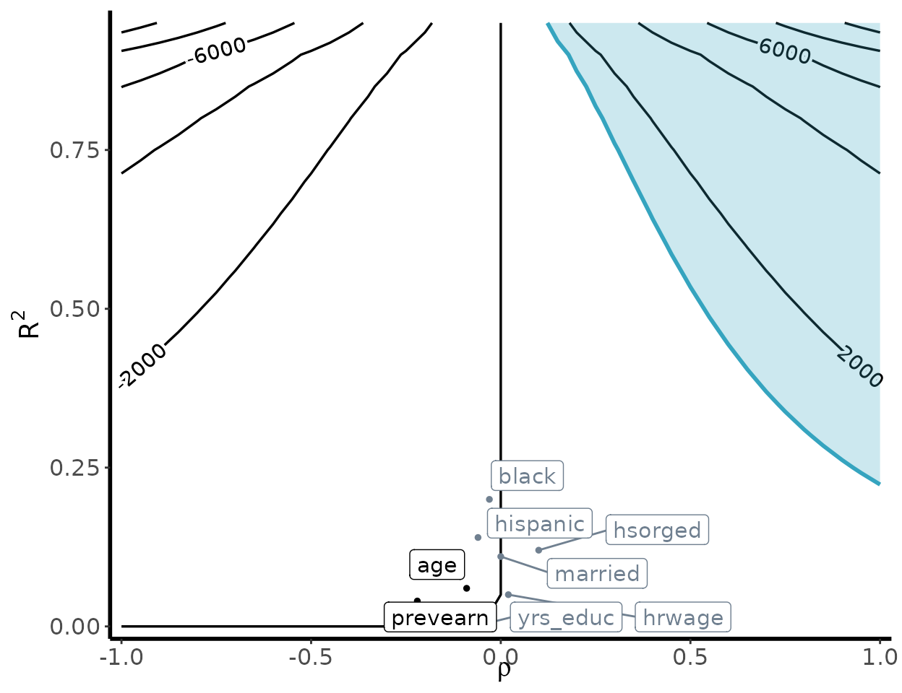

Sensitivity analysis for external validity
external-validity.RmdIn the following vignette, we will walk through a basic example of
how to conduct a sensitivity analysis for external validity using
senseweight. We will use a subset of the JTPA data.
library(senseweight)
library(ggplot2)
# Load in JTPA data:
data(jtpa_women)
# Summarize sites
jtpa_women |>
dplyr::group_by(site) |>
dplyr::summarize(
length(prevearn),
dplyr::across(
c(prevearn, age, married, hrwage, black, hispanic, hsorged, yrs_educ),
mean
)
)
#> # A tibble: 16 × 10
#> site `length(prevearn)` prevearn age married hrwage black hispanic
#> <chr> <int> <dbl> <dbl> <dbl> <dbl> <dbl> <dbl>
#> 1 CC 524 1855. 32.1 0.219 479. 0.101 0.693
#> 2 CI 190 2250. 33.5 0.253 458. 0.0684 0.0105
#> 3 CV 788 2192. 33.6 0.278 455. 0.173 0.00635
#> 4 HF 234 1997. 31.6 0.184 455. 0.432 0.0342
#> 5 IN 1392 3172. 34.9 0.193 466. 0.243 0.0194
#> 6 JC 81 2564. 30.6 0.136 531. 0.642 0.247
#> 7 JK 353 1928. 30.0 0.113 453. 0.912 0
#> 8 LC 485 3039. 33.9 0.258 464. 0.0165 0.165
#> 9 MD 177 2915. 34.6 0.181 480. 0.367 0
#> 10 MN 179 2215. 37.6 0.352 454. 0.00559 0.0782
#> 11 MT 38 1680. 33.8 0.395 474. 0 0.0526
#> 12 NE 636 2161. 31.7 0.0975 477. 0.511 0.0377
#> 13 OH 74 2568. 34.6 0.324 486. 0.0135 0
#> 14 OK 87 2320. 37.3 0.126 586. 0.759 0.0805
#> 15 PR 463 1783. 32.8 0.0842 506. 0.268 0.378
#> 16 SM 401 2997. 32.2 0.284 429. 0.0200 0.00249
#> # ℹ 2 more variables: hsorged <dbl>, yrs_educ <dbl>Assume researchers are interested in generalizing the results from the site of Omaha, Nebraska to the other 15 experimental sites:
site_name <- "NE"
df_site <- jtpa_women[which(jtpa_women$site == site_name), ]
df_else <- jtpa_women[which(jtpa_women$site != site_name), ]
# Estimate unweighted estimator:
model_dim <- estimatr::lm_robust(Y ~ T, data = df_site)
PATE <- coef(lm(Y ~ T, data = df_else))[2]
DiM <- coef(model_dim)[2]
# Generate weights using observed covariates:
df_all <- jtpa_women
df_all$S <- ifelse(jtpa_women$site == "NE", 1, 0)
model_ps <- WeightIt::weightit(
(1 - S) ~ . - site - T - Y,
data = df_all, method = "ebal", estimand = "ATT"
)
weights <- model_ps$weights[df_all$S == 1]
# Estimate IPW model:
model_ipw <- estimatr::lm_robust(Y ~ T, data = df_site, weights = weights)
ipw <- coef(model_ipw)[2]
# Estimate bound for var(tau):
m <- sqrt(stats::var(df_site$Y[df_site$T == 1]) / stats::var(df_site$Y[df_site$T == 0]))
# Since m > 1:
vartau <- stats::var(df_site$Y[df_site$T == 1]) - stats::var(df_site$Y[df_site$T == 0])Sensitivity Summary Measures
Robustness value
We can generate the sensitivity summary measures using the
summarize_sensitivity function:
summarize_sensitivity(
weights = weights,
Y = df_site$Y,
Z = df_site$T,
sigma2 = vartau,
estimand = "PATE"
)
#> Unweighted Unweighted_SE Estimate SE RV sigma_tau_bound cor_w
#> Z 1107.35 982.65 1356.66 1417.3 0.36 2897.9 0.07The summarize_sensitivity function defaults to
evaluating the robustness value at q=1, indicating a
robustness value, relative to a bias equal to the point estimate.
Researchers can specify different values for q in the
function. In the generalization setting, researchers can modify the
sigma2 bound and posit their own values for a plausible
bound (given substantive justification). With no specification,
sigma2 will be automatically calculated to be bound by
var(Y(1)) + var(Y(0)).
RV = robustness_value(estimate = ipw, b_star = 0, sigma2 = vartau, weights = weights)
print(RV)
#> [1] 0.4113622Benchmarking
# Select weighting variables:
weighting_vars = names(df_all)[which(!names(df_all) %in% c("site", "S", "Y", "T"))]
# Run bechmarking:
df_benchmark <- run_benchmarking(
weighting_vars = weighting_vars,
data = df_all[, -1],
treatment = "T", outcome = "Y", selection = "S",
estimate = ipw,
RV = RV, sigma2 = vartau,
estimand = "PATE"
)
print(df_benchmark)
#> variable R2_benchmark rho_benchmark bias MRCS k_sigma_min k_rho_min
#> 1 prevearn 0.04 -0.22 -115.00 -11.80 9.99 -2.92
#> 2 age 0.06 -0.09 -55.45 -24.47 6.91 -7.37
#> 3 married 0.11 0.00 -2.52 -539.33 3.82 -224.19
#> 4 hrwage 0.05 0.02 13.51 100.40 8.32 27.40
#> 5 black 0.20 -0.03 -33.11 -40.97 2.03 -24.72
#> 6 hispanic 0.14 -0.06 -62.63 -21.66 3.01 -10.30
#> 7 hsorged 0.12 0.10 95.06 14.27 3.51 6.22
#> 8 yrs_educ 0.00 -0.07 -5.23 -259.49 408.90 -9.85Bias Contour Plot
contour_plot(
var(weights), vartau, ipw, df_benchmark,
benchmark = TRUE, shade = TRUE,
shade_var = c("age", "prevearn"),
label_size = 4
) +
geom_point(aes(x = RV, y = sqrt(RV))) +
annotate("text",
x = RV - 0.01, y = sqrt(RV) + 0.02,
label = expression(RV[1] * "= 0.41"), hjust = 0, vjust = 0, size = 3
)